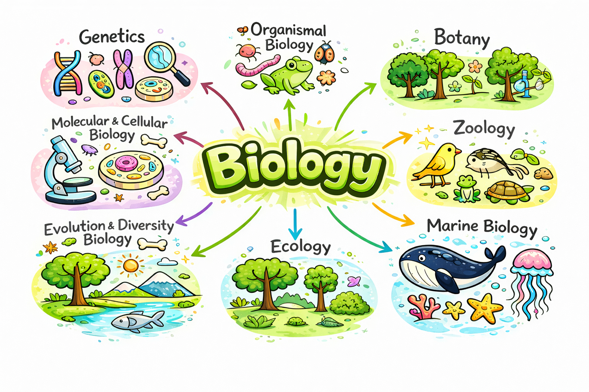

What is biology major
Biology is the scientific study of living organisms, encompassing everything from the molecular mechanisms within cells to the complex interactions between entire ecosystems. It seeks to understand how life functions, evolves, reproduces, and adapts to changing environemnts. The major branches include Molecular Biology, Cell Biology, Genetics, Ecolgy, Zoology, Botany, Microbiology, Physiology, Evolutionary Biology and so on.

Molecular & Cellular Biology
The molecular level of bilogy regers to the level of biological organization that studies the sturcture, function, and interactions of biological molecules that make up living organisms
Organismal Biology
Organismal Biology is a big part of biology that intersted in
Anatomy
Physiology
Developmental Biology
Morphology
Histology
Ecology and Evolutionary Biology
Explores how organisms interact with each other and their environments, and how life has changed over billions of years through natural selection and adaptation. This branch is critical for understanding biodiversity and conservation.